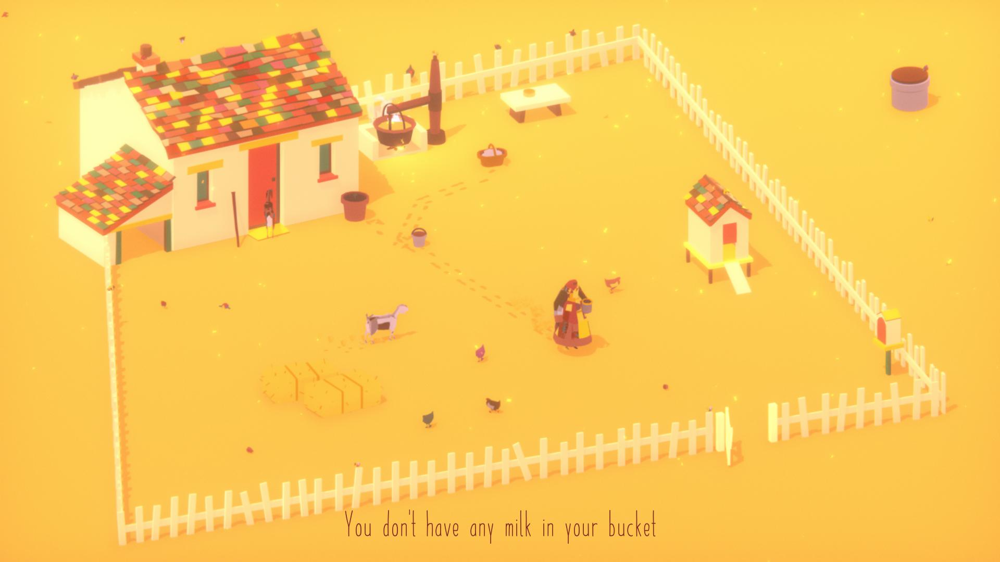

| Home | Sand | Goats |
Where the goats are is a story about a dying place. I'm glad I chose this as my second game, as it does have some similar elements to Sand: A Superfluous Game (henceforth referred to as "Sand"). Though both have settings that are far removed from one another they share the common traits of both being in a desert and in a land that is dead or is dying. One undercuts this setting by throwing humor into it, this being Sand. Where The Goats Are, on the other hand, fully embraces this sad setting to tell a tragic story. Though I don’t know if I would say I enjoyed this game, I can say that it is a great game, as this isn’t a story meant to bring joy. This is a sad tale about a woman trying to live her day-to-day life as her world crumbles around her.
This game has an amazing setting, a homestead where you gather eggs to eat, prepare cheese to sell, and buy hay for your goats to eat. Unlike Sand, there is no exploration, because this game doesn't need it. The point is that you are stuck here, alone. And though the setting doesn't change location, the atmosphere changes throughout the game as everything fall apart.

Where The Goats Are has no dialogue whatsoever, your only interaction with human life that involves language of any kind are the letters you receive throughout the game. This works very well in the games favor as this only method of communication is very distant, which gives the player a sense of loneliness. Sand achieves this loneliness as well but unintentionally, there are people all around you, but you can’t speak to a large majority of them. There is one other human character in this game other than the character you control, Tikvah, and that character is the man who delivers the letters and who you can buy more goats and hay from. You never speak to him, yet despite that his actions tell you all you need to know about the current situation. When the world is starting to become harsher, he runs to your house instead of his usual stroll, which I find to be a pretty good way of communicating the coming danger to the player, no words needed. The interactions with other humans, and more importantly the lack of communication with other humans, makes this game great.
There is a great moment in this game, after the game fades to black for the night, when three distant bangs can be heard. This was a great way to begin the downfall of this land. The player is immediately struck with the question of “what are those bangs”, and of course one of the things that comes to mind is gunshots. This question lingers for a whole unnerving day until three ghost goats arrive at the house, giving the player the answer. You find out more specifically what happened when one of your brothers sends a letter saying that his farm was burned down, and from our hearing of those bangs we know that someone set that fire. The line “maybe some of my goats made it to you.” Is a line that sent chills down my spine, as I knew who those ghostly goats had belonged to. Moments like this greatly enhance the experience when playing this game.
This game has many great moments, and even without any real meaningful gameplay the story carries this game to greatness. The setting and tone are on point, everything comes together in this game to immerse the player in a world where none of their actions really matter in the end as everything dies and ash rains from the sky.